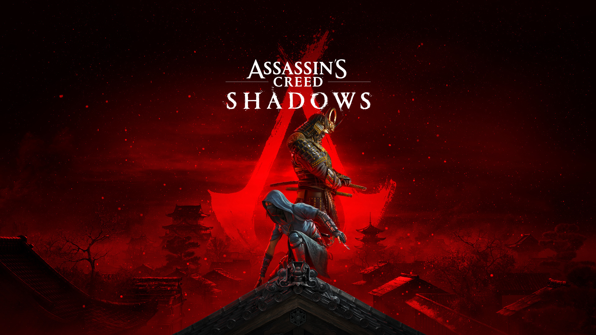

"Assassin's Creed Shadows" fait polémique au Japon
L'épisode Shadows de la série de jeux vidéo Assassin's Creed, qui sort jeudi 20 mars, ne fait pas l'unanimité au Japon. Un député japonais a critiqué mercredi 19 mars le nouveau titre en se plaignant qu'un personnage de samouraï détruit l'intérieur d'un sanctuaire shinto. Shadows, jeu de la société française Ubisoft, se déroule dans le Japon féodal du XVIe siècle, inspiré par des événements historiques réels et des films de samouraïs.
Mais une vidéo du jeu diffusée sur YouTube montre un personnage tirant à l'arc vers des prêtres et détruisant un tambour traditionnel et un autel. La réaction ne s'est pas fait attendre à Tokyo. "Il est important de traiter la culture avec respect", a déclaré au Parlement Hiroyuki Kada, membre du Parti libéral-démocrate, la formation conservatrice au pouvoir. "Je suis préoccupé par le fait que les attaques et les actes de destruction dans le jeu puissent conduire à des comportements de nuisance similaires dans le monde réel", a déclaré le député.
Le député a également critiqué le créateur de jeux français pour avoir utilisé un sanctuaire qui existe réellement dans sa circonscription de la région de Hyogo (ouest), sans obtenir la permission du sanctuaire lui-même.
Être ou ne pas être samouraï
Shadows a déjà suscité un vif débat en ligne à cause de l'un des deux protagonistes jouables, Yasuke, un personnage noir au service du seigneur de guerre Oda Nobunaga, doté du statut de samouraï. "Le parti pris du jeu, c'est de dire qu'il était samouraï", explique Pierre-François Souyri, historien spécialiste du Japon et consultant sur le jeu Ubisoft. "C'est un personnage qui a réellement existé", insiste le spécialiste, "mais les textes dans lesquels il est mentionné nous disent des choses parfois difficiles à interpréter."
À l'inverse, Yuichi Goza, professeur adjoint au Centre national de recherche pour les études japonaises à Kyoto, estime que "rien ne prouve que Yasuke possédait de telles compétences" de samouraï. "Yasuke se distinguait surtout par sa couleur de peau et sa force physique", assure ce spécialiste du Japon médiéval, jugeant probable que "(le seigneur de guerre) Oda Nobunaga ait gardé Yasuke à ses côtés pour en faire un spectacle".
Dans l'archipel, une pétition contre la représentation du personnage de samouraï a recueilli plus de 100 000 signatures. Le texte de la pétition a critiqué un "manque d'exactitude historique et de respect culturel" de la part des développeurs du jeu. À l'instar du député conservateur Hiroyuki Kada, des Japonais ont déjà exprimé leur colère quant au fait que les joueurs puissent avoir la possibilité de détruire l'intérieur de sanctuaires.
Si la série a déjà été critiquée dans le passé, c'est la première fois qu'elle fait face à des critiques aussi virulentes avant même la sortie d'un opus.
Source : France Info